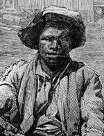

|

|

|
|
|
Gabriel and his brothers Martin and Solomon were slaves on the estate of
Thomas H. Prosser in Henrico County just outside Richmond, Va. The wife
of his master taught him to read and write. Very little is known about
his physical appearance except that he had lost two front teeth and had
several scars on his head. Gabriel was a careful student of the Bible,
especially the Old Testament, where he believed he found his prototype
in the picturesque and legendary figure of Samson, in imitation of whom
he wore his hair long. He believed that he was a child of destiny,
raised up by Jehovah to bring a great deliverance to his people.
Gabriel planned an audacious, although unsuccessful, slave uprising. He
organized over 1000 slaves and oversaw the making of weapons and
bullets. On Saturday night, August 30, 1800, the insurrectionists
assembled at a brook on the Prosser estate and divided into three
columns under previously selected leaders to converge on Richmond, about
six miles away. They were to seize the penitentiary, recently converted
into an arsenal, and the powder house, and seal off the bridges around
the city. Their plan to kill as many whites as possible could have
succeeded in a surprise attack because the city could not have mustered
more than four or five hundred men and thirty muskets in its defense.
The insurrection, however elaborate and detailed the plans for it,
failed almost before it started. That day two slaves of the Sheppard
family told of the plot which was to be executed that night. Governor
James Monroe was informed and he immediately dispatched troops to
strategic points in the city and in pursuit of the insurgents. That
night a heavy rain caused the streams to rise and virtually isolate the
Prosser estate. Because roads and bridges became impassable and because
many insurrectionists interpreted the storm as a prophetic sign, the
assembled group disbanded and only a small number were eventually
apprehended.
Gabriel went into hiding. On September 21 he hailed the schooner
Mary, which had run aground four miles below Richmond, and was
secreted aboard. But his presence became known, and when the schooner
put in at Norfolk two constables boarded the ship and captured him. He
was committed to the Richmond penitentiary on September 27, was tried on
October 3, and together with some other insurrectionists, was hanged on
October 7. In all, forty-one men were hanged.
Source: Rayford W. Logan and Michael R. Winston, eds. Dictionary
of American Negro Biography (New York: W. W. Norton, 1983), 506-07.
|